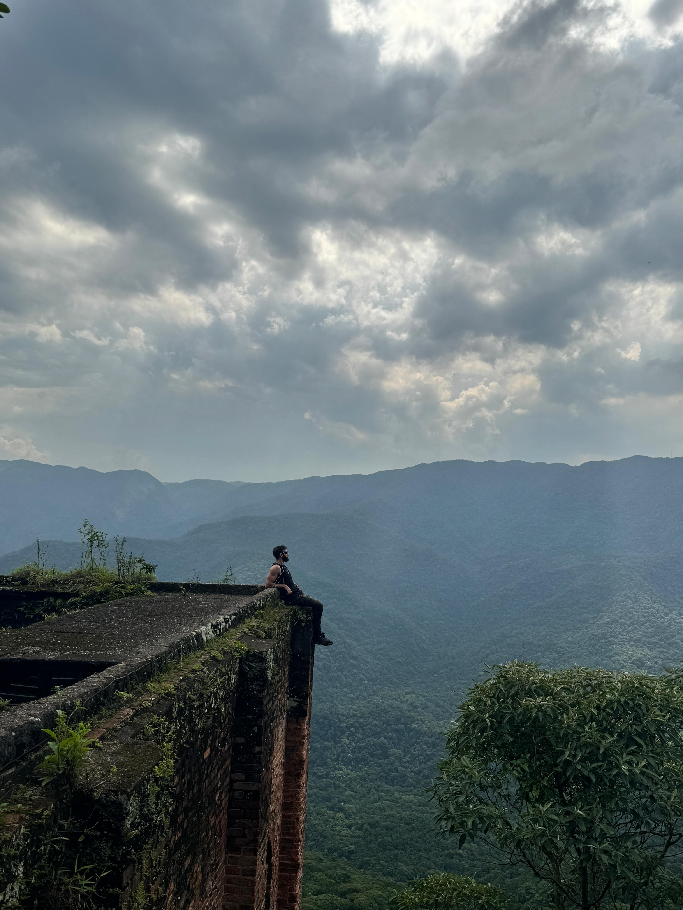
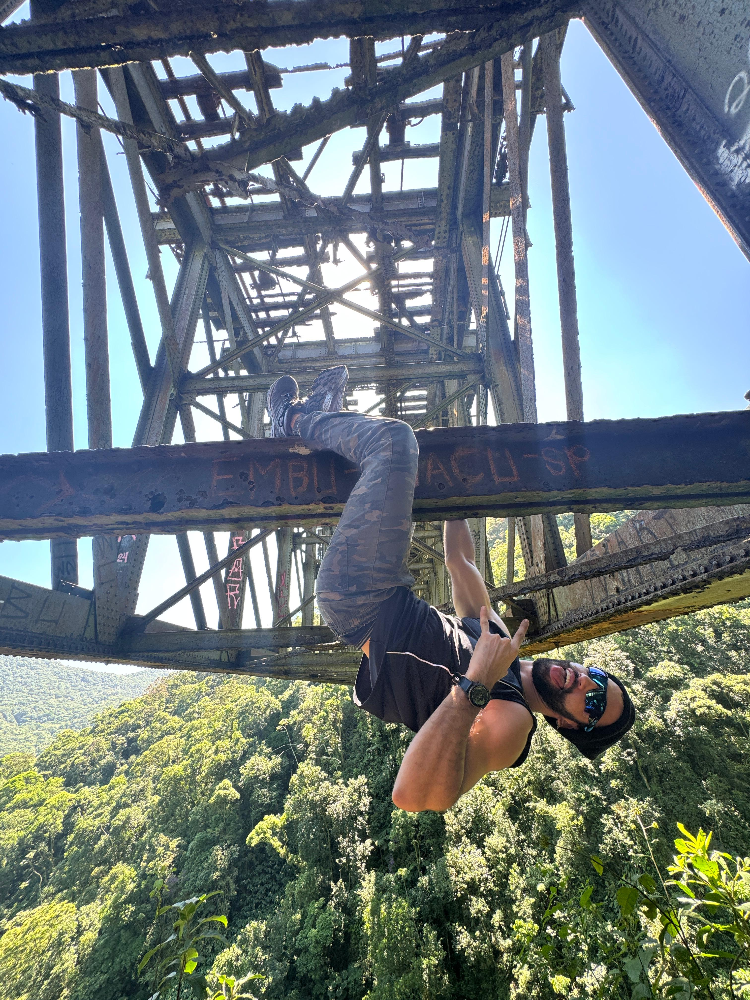
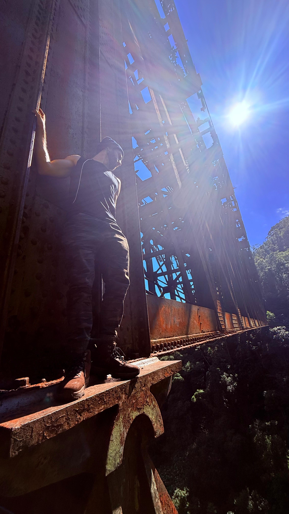
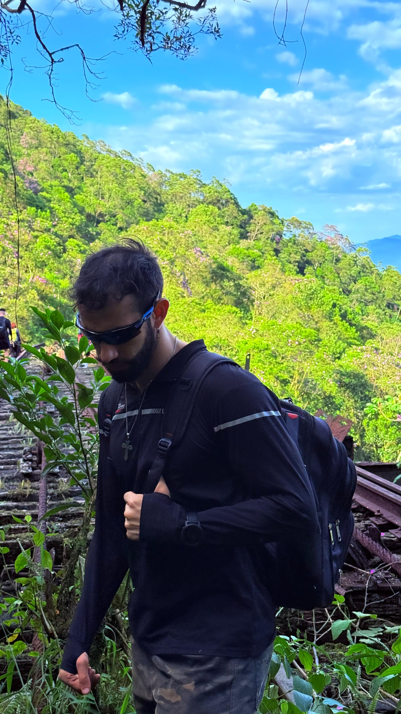
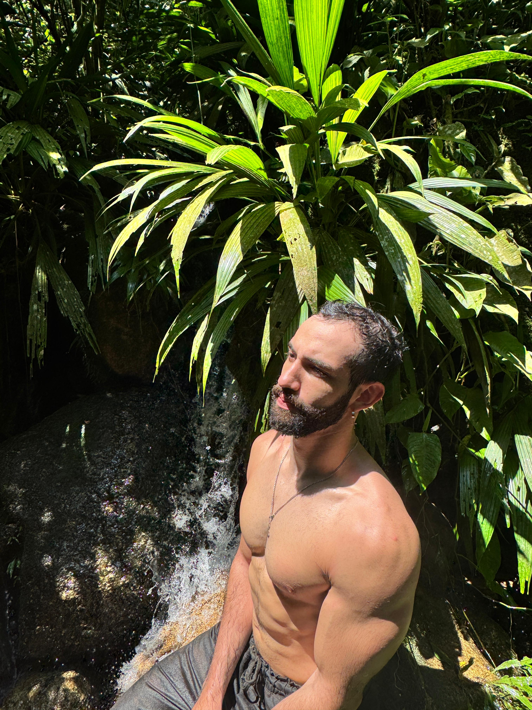
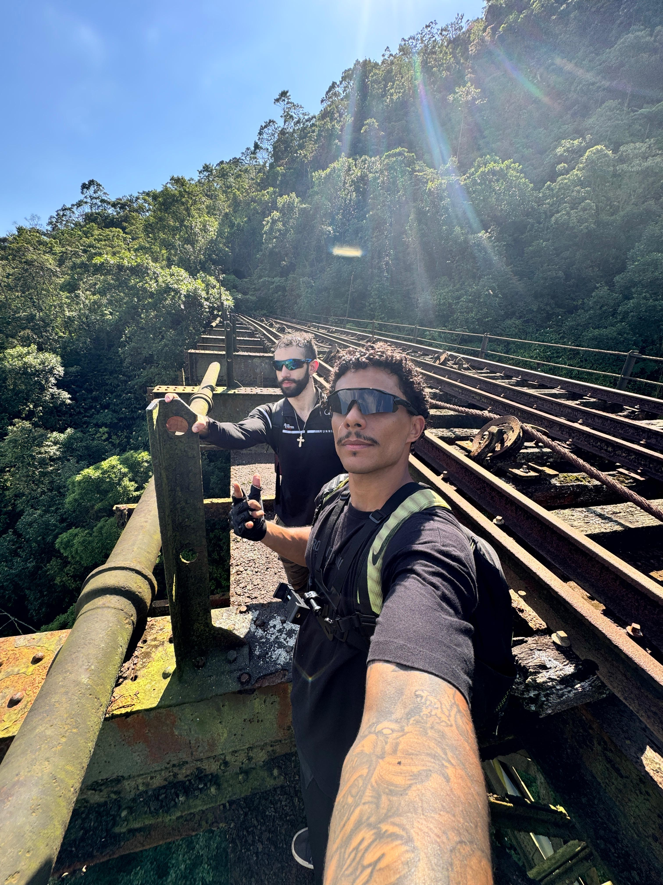
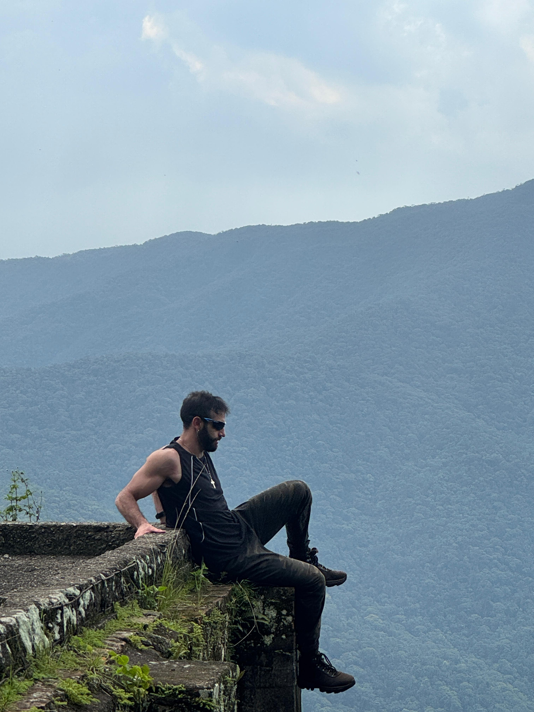
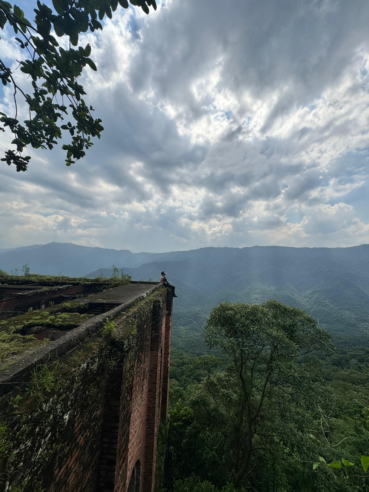
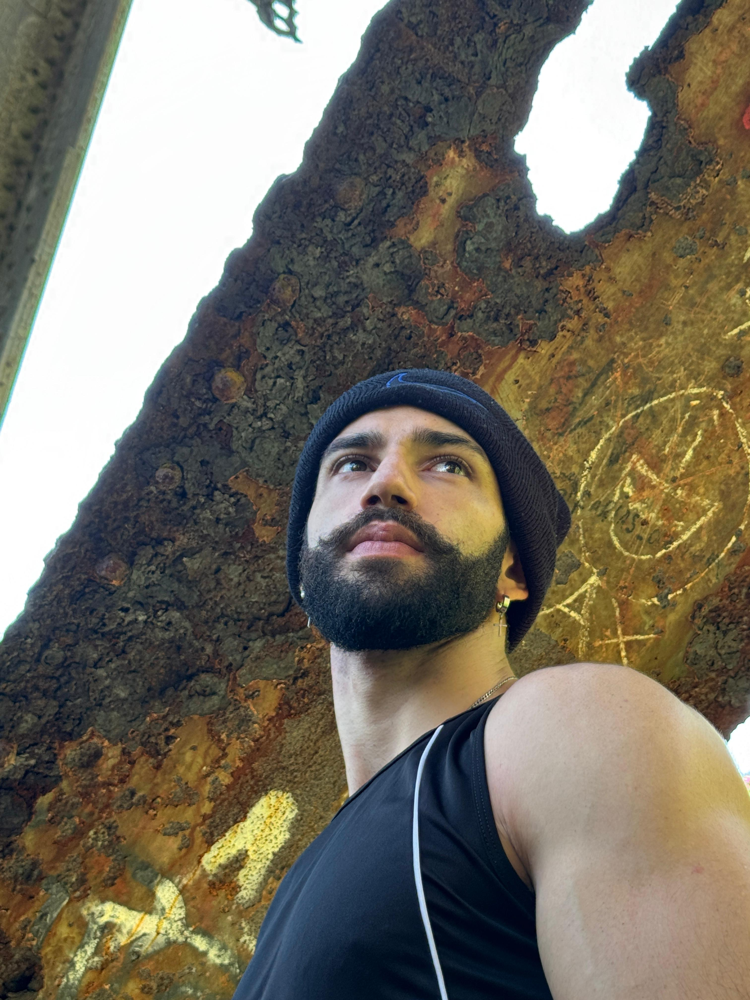

01 / Serra do Mar
Entre ferro
e abismo.
Sistema Funicular
Onde a mata engoliu os trilhos — mas não a história.
O caminho avança por estruturas ferroviárias antigas, túneis, pontes e trechos suspensos no coração da Serra do Mar. Cada passo mistura adrenalina, memória industrial e uma natureza que retomou o espaço.
“Há caminhos que não foram feitos para passar depressa.”







